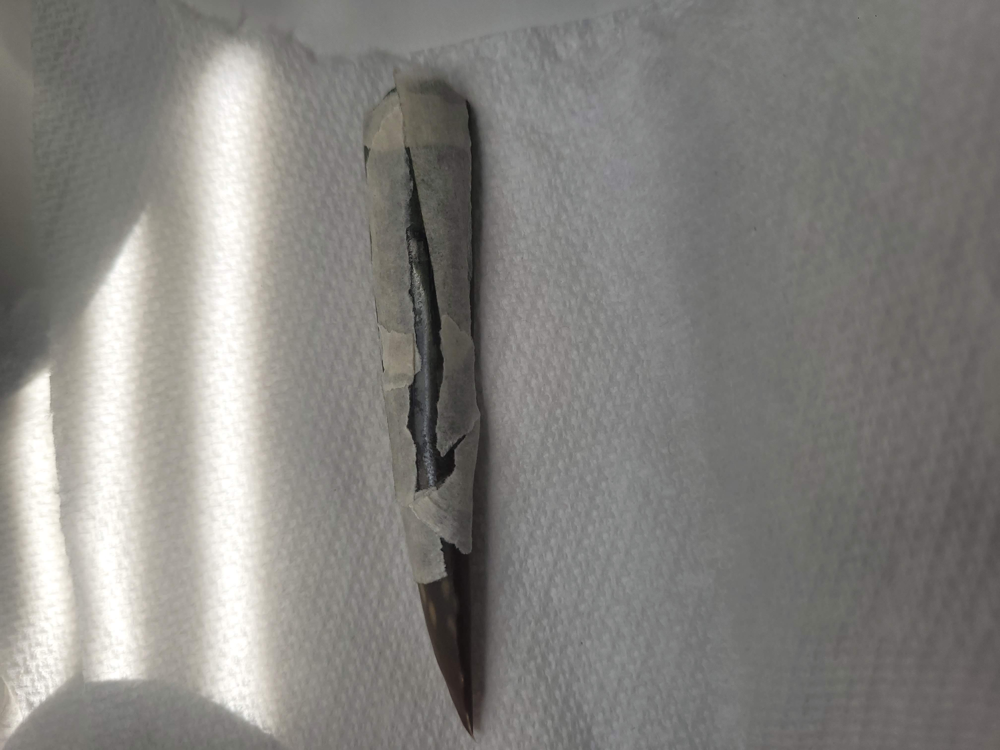

Gardening Experiments
Table of Contents
1 Aloe Vera Leaf Rooting
1.1 The backstory:
I used to have a Aloe Vera plant, which lived for 4 years, until it rotted. All that remained of that plant was a 1 and a half inch leaf, which was drying up quickly. I had to propagate this plant using this ONE leaf. I had one go at it…
Fast forward one month: I barely watered the Aloe leaf in fear of it rotting. The leaf was doing pretty good, but a good chunk of it had dried up. I had to slow down this "drying up" effectively till the leaf grew roots. I started to dip the leaf in water and let it sit on the soil in hopes of the leaf absorbing the few drops of water that stayed on it, while letting the rest of the water evaporate, or seep into the (dry) soil. This method of watering effectively watered the leaf really well, while preventing fungus. All was good, till the huge mess up.
The huge mess up: So as per my usual routine of watering the Aloe leaf, I dipped the Aloe Leaf into the water. However, this time, I noticed that the cup I was using was a copper cup, and copper was known to have anti-bacterial and anti-fungal properties. So, theoretically, I could just let the leaf sit in the cup for a bit along with the water, in order to have the leaf absorb a good amount of water, in an effort to revive the dried up parts of the leaf (if its possible), all while avoiding fungus with the properties of the copper cup. So I let the leaf sit in the water. I, however, happened to be busy with something else at the same time, and I totally forgot about the Aloe leaf. That is, until the end of the day, when I noticed the cup and the absolutely SOAKED Aloe leaf. I took the Aloe leaf out of the water in complete horror as the leaf looked extremely thin, and soaked. The Aloe leaf was now either completely dead, or it had some surviving Aloe cells left. Now, I couldn't do my previous method of watering the Aloe leaf, because the leaf would dry up in no time, so over the next few days, I watered the Aloe leaf more frequently, using the very method which messed up my Aloe Leaf, as that was the only method of watering which could compensate for the drying time of the Aloe leaf, while preventing any fungus from catching on to the Aloe leaf. Good news: The Aloe leaf hadn't caught any fungus, and seemed to be keeping it's moisture for decent amount of times for its condition. Bad news: Considering how thin the Aloe leaf was, there was no way it was going to grow any roots.
Luckily, the liquid inside the Aloe leaf has anti-bacterial and anti-fungal properties, according to a few google searches I made, this would be crucial to the propagation method I end up devising.
I also happened to buy another Aloe plant which I would end up using for my propagation method. At this point, you may be wondering, why I'm still trying to propagate this Aloe leaf. Well, it is mostly because, it would be really cool to clone a whole plant which was dead except for one leaf, and then have the leaf successfully grow into a full fledged Aloe plant, even with the extremely rare odds, and the setbacks.
I had to devise a new propagation method.
1.2 The propagation method:
After a lot of thinking, this is what I came up with:
- I implant the Aloe leaf into another Aloe leaf I cut off from the new Aloe plant I bought in order to do one or both of these things:
- Regrow or regenerate the leaf using the nutrients and any possible healing that can be derived from the Aloe leaf's cellular technology
- Have the cells of the Aloe leaf grow alongside the cells of the Aloe leaf into which it was implanted, and effectively have it become a part of the Aloe leaf (kind of like a graft and a tissue culture combined)
1.3 The procedure:
Materials I used
- Tape
- A blade
- A tissue paper
- The two Aloe leafs
Step by step procedure of how I went about doing this:
- I cut a rectangular (without one of the shorter sides) slit into the back of the bigger Aloe leaf with the blade (without cutting into the front of the Aloe leaf)
- I inserted the smaller Aloe leaf which I wanted to propagate, into the bigger Aloe leaf
- I cleaned the surface of the bigger Aloe leaf of the Aloe gel, by using the tissue paper
- Finally, I put tape over and around the slit area, to ensure that the implant area heals properly without drying up
1.4 How the Aloe leaf has been doing so far:
1.4.1 First day after the implant

Figure 1: The Aloe leaf at Day 1